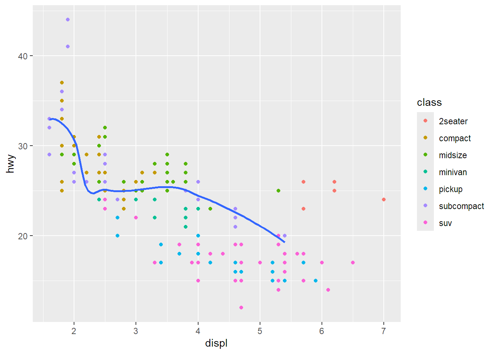
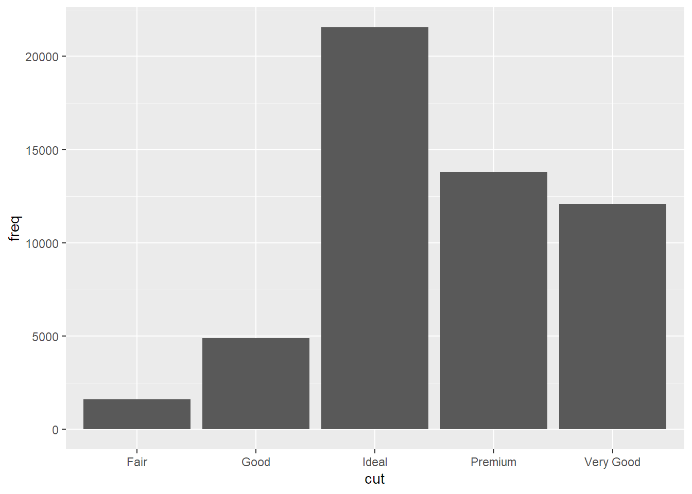
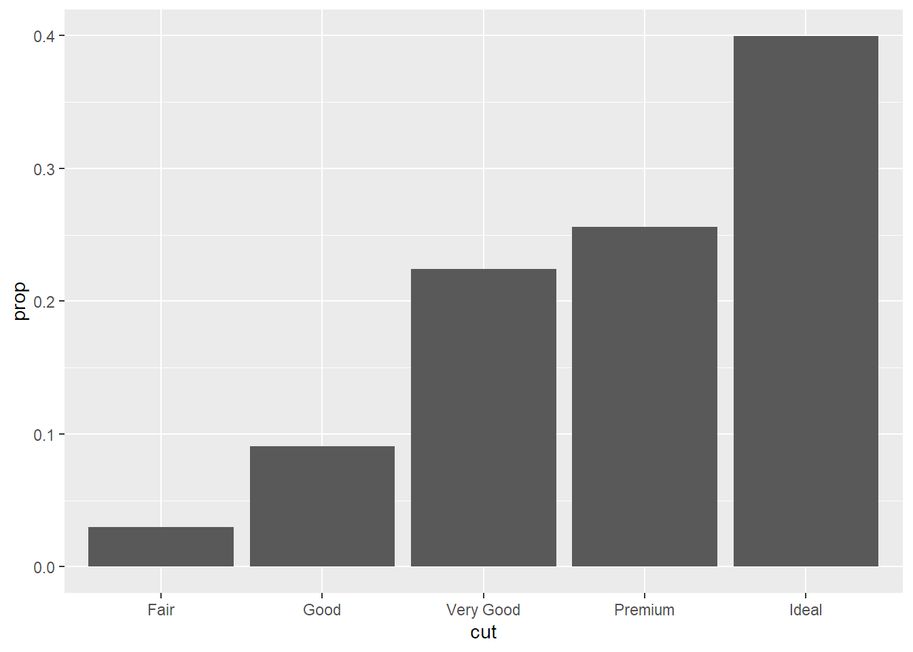
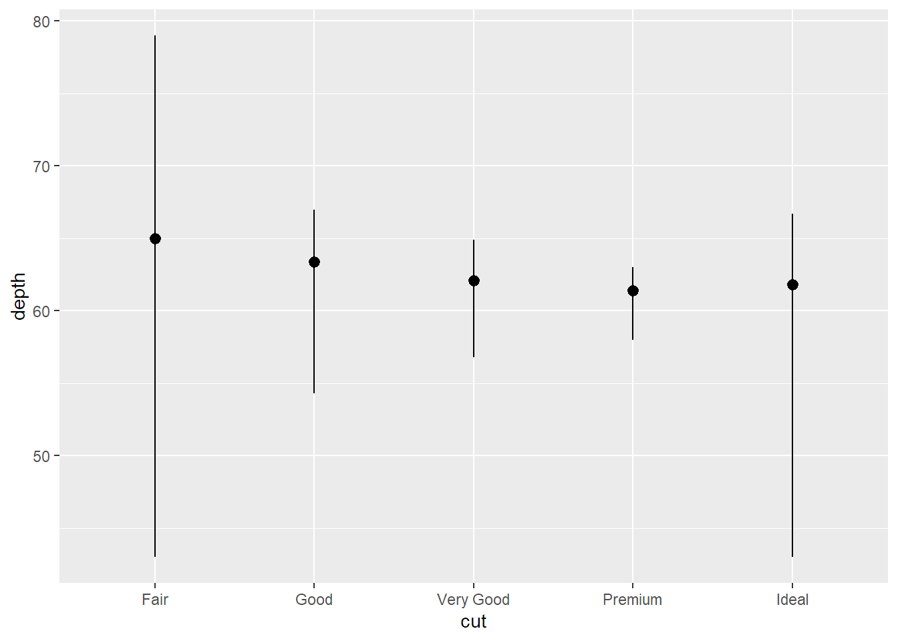
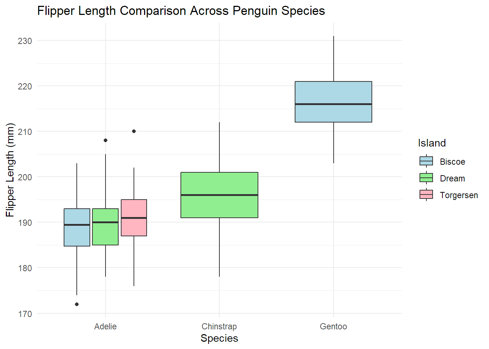
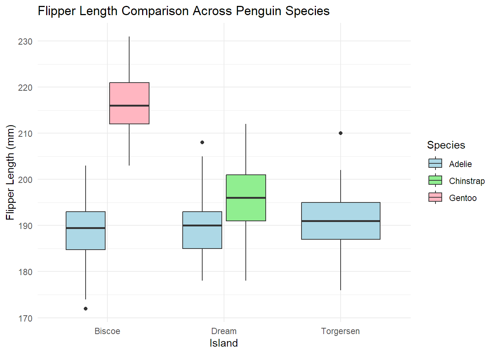

#ggplot(data=<DATA>) +#<GEOM_FUNCTION>(mapping=aes(<XYMAPPINGS))# geom is how you represent your data#point, line, smooth#aes indicates the aesthetics, include x and y here#add colour = z to map z to colour (changes colour based on class)#alpha=transparency, colour, size, shape#updated at the end of workshop 2:#ggplot(data = <DATA>) + # <GEOM_FUNCTION>(# mapping = aes(<MAPPINGS>),# stat = <STAT>, # position = <POSITION># ) +# <FACET_FUNCTION>
#can add group= to group the data but it doesnt add a legend,ggplot(data = mpg) +geom_point(mapping =aes(x = displ, y = hwy)) +geom_smooth(mapping =aes(x = displ, y = hwy))
#not ideal because it increase the chance of a mistype if you go to change things#instead:ggplot(data = mpg, mapping=aes(x=displ,y=hwy)) +#makes mappings global to the plotgeom_point()+geom_smooth()
# you can individually add aesthetics to each geomggplot(data = mpg, mapping =aes(x = displ, y = hwy)) +geom_point(mapping =aes(color = class)) +geom_smooth(data =filter(mpg, class =="subcompact"), se =FALSE)

#filter means you are only showing subcompact cars on the line#these should be the sameggplot(data = mpg, mapping =aes(x = displ, y = hwy)) +geom_point() +geom_smooth()
# A tibble: 5 × 2
cut freq
<chr> <dbl>
1 Fair 1610
2 Good 4906
3 Very Good 12082
4 Premium 13791
5 Ideal 21551
ggplot(data = demo) +geom_bar(mapping =aes(x = cut, y = freq), stat ="identity")

#override into proportionsggplot(data = diamonds) +geom_bar(mapping =aes(x = cut, y =stat(prop), group =1))

#improve transparency by using stat_summaryggplot(data = diamonds) +stat_summary(mapping =aes(x = cut, y = depth),fun.min = min,fun.max = max,fun = median )

Aesthetics
ggplot(data = diamonds) +geom_bar(mapping =aes(x = cut, colour = cut)) #colour just changes the outline
ggplot(data = diamonds) +geom_bar(mapping =aes(x = cut, fill = cut)) #fill actually fills in the shape
ggplot(data = diamonds) +geom_bar(mapping =aes(x = cut, fill = clarity)) #breaks the cut into clarity
#position adjustments: identity = raw data, fill = changes height, dodge = forces ggplot2 to not put things on top of eachother#change transparancy with alphaggplot(data = diamonds, mapping =aes(x = cut, fill = clarity)) +geom_bar(alpha =1/5, position ="identity")
#color outlines with no fillggplot(data = diamonds, mapping =aes(x = cut, colour = clarity)) +geom_bar(fill =NA, position ="identity")
#position fill means that you make all the stacks the same height, showing more of a percentage instead of actual countggplot(data = diamonds) +geom_bar(mapping =aes(x = cut, fill = clarity), position ="fill")
# dodge moves them side by sideggplot(data = diamonds) +geom_bar(mapping =aes(x = cut, fill = clarity), position ="dodge")
# jitter slightly move the pointsggplot(data = diamonds) +geom_point(mapping =aes(x = cut, y = clarity), position ="jitter")
Workshop 3: GitHub Set Up
(and for loops practice - from when I started before the workbook was finalised)
For loops
#for (value in that){# this#}#this is telling r to print "one run" for every value in cfor (value inc("My", "first", "for", "loop")){print("one run") }
#make a for loopfor(i in my_list){ #heading of the for loop result <- i out <-paste0("I am printing loop number: ", i, ".")print(out)Sys.sleep(0.5) #this slows it down for us to see}
[1] "I am printing loop number: 1."
[1] "I am printing loop number: 2."
[1] "I am printing loop number: 3."
[1] "I am printing loop number: 4."
[1] "I am printing loop number: 5."
[1] "I am printing loop number: 6."
[1] "I am printing loop number: 7."
[1] "I am printing loop number: 8."
[1] "I am printing loop number: 9."
[1] "I am printing loop number: 10."
[1] "I am printing loop number: 11."
[1] "I am printing loop number: 12."
[1] "I am printing loop number: 13."
[1] "I am printing loop number: 14."
[1] "I am printing loop number: 15."
[1] "I am printing loop number: 16."
[1] "I am printing loop number: 17."
[1] "I am printing loop number: 18."
[1] "I am printing loop number: 19."
[1] "I am printing loop number: 20."
[1] "I am printing loop number: 21."
[1] "I am printing loop number: 22."
[1] "I am printing loop number: 23."
[1] "I am printing loop number: 24."
[1] "I am printing loop number: 25."
[1] "I am printing loop number: 26."
[1] "I am printing loop number: 27."
[1] "I am printing loop number: 28."
[1] "I am printing loop number: 29."
[1] "I am printing loop number: 30."
[1] "I am printing loop number: 31."
[1] "I am printing loop number: 32."
[1] "I am printing loop number: 33."
[1] "I am printing loop number: 34."
[1] "I am printing loop number: 35."
[1] "I am printing loop number: 36."
[1] "I am printing loop number: 37."
[1] "I am printing loop number: 38."
[1] "I am printing loop number: 39."
[1] "I am printing loop number: 40."
[1] "I am printing loop number: 41."
[1] "I am printing loop number: 42."
[1] "I am printing loop number: 43."
[1] "I am printing loop number: 44."
[1] "I am printing loop number: 45."
[1] "I am printing loop number: 46."
[1] "I am printing loop number: 47."
[1] "I am printing loop number: 48."
[1] "I am printing loop number: 49."
[1] "I am printing loop number: 50."
print("For loop complete!")
[1] "For loop complete!"
print("Program complete")
[1] "Program complete"
#more complexprint("This for loop will add 500 to each iteration")
[1] "This for loop will add 500 to each iteration"
add_me<-500for(i in my_list){ result<- i + add_me out<-paste0("Result of iteration: ", i, "=", result, ".")print(out)}
[1] "Result of iteration: 1=501."
[1] "Result of iteration: 2=502."
[1] "Result of iteration: 3=503."
[1] "Result of iteration: 4=504."
[1] "Result of iteration: 5=505."
[1] "Result of iteration: 6=506."
[1] "Result of iteration: 7=507."
[1] "Result of iteration: 8=508."
[1] "Result of iteration: 9=509."
[1] "Result of iteration: 10=510."
[1] "Result of iteration: 11=511."
[1] "Result of iteration: 12=512."
[1] "Result of iteration: 13=513."
[1] "Result of iteration: 14=514."
[1] "Result of iteration: 15=515."
[1] "Result of iteration: 16=516."
[1] "Result of iteration: 17=517."
[1] "Result of iteration: 18=518."
[1] "Result of iteration: 19=519."
[1] "Result of iteration: 20=520."
[1] "Result of iteration: 21=521."
[1] "Result of iteration: 22=522."
[1] "Result of iteration: 23=523."
[1] "Result of iteration: 24=524."
[1] "Result of iteration: 25=525."
[1] "Result of iteration: 26=526."
[1] "Result of iteration: 27=527."
[1] "Result of iteration: 28=528."
[1] "Result of iteration: 29=529."
[1] "Result of iteration: 30=530."
[1] "Result of iteration: 31=531."
[1] "Result of iteration: 32=532."
[1] "Result of iteration: 33=533."
[1] "Result of iteration: 34=534."
[1] "Result of iteration: 35=535."
[1] "Result of iteration: 36=536."
[1] "Result of iteration: 37=537."
[1] "Result of iteration: 38=538."
[1] "Result of iteration: 39=539."
[1] "Result of iteration: 40=540."
[1] "Result of iteration: 41=541."
[1] "Result of iteration: 42=542."
[1] "Result of iteration: 43=543."
[1] "Result of iteration: 44=544."
[1] "Result of iteration: 45=545."
[1] "Result of iteration: 46=546."
[1] "Result of iteration: 47=547."
[1] "Result of iteration: 48=548."
[1] "Result of iteration: 49=549."
[1] "Result of iteration: 50=550."
print("Complete!")
[1] "Complete!"
for(i inc(1,2,3,4,5)){ #for every iteration in the listprint(paste("I am base loop number:", i)) #print this# Sys.sleep(0.8) #slows downfor(j inc(1,2,3)){ #for every iteration in cprint(paste("...I am inside loop number:",j)) #print this#Sys.sleep(0.8) } # this closes the loop, if you move it up before the next loop then it wouldn't be nested and just one after another}
[1] "I am base loop number: 1"
[1] "...I am inside loop number: 1"
[1] "...I am inside loop number: 2"
[1] "...I am inside loop number: 3"
[1] "I am base loop number: 2"
[1] "...I am inside loop number: 1"
[1] "...I am inside loop number: 2"
[1] "...I am inside loop number: 3"
[1] "I am base loop number: 3"
[1] "...I am inside loop number: 1"
[1] "...I am inside loop number: 2"
[1] "...I am inside loop number: 3"
[1] "I am base loop number: 4"
[1] "...I am inside loop number: 1"
[1] "...I am inside loop number: 2"
[1] "...I am inside loop number: 3"
[1] "I am base loop number: 5"
[1] "...I am inside loop number: 1"
[1] "...I am inside loop number: 2"
[1] "...I am inside loop number: 3"
Github Workflow
Edit → Save → Stage → Commit → Pull → Push
Workshop 4: Developer’s Toolbox and AI
Packages
library(ellmer)library(chattr)
API Key
Add these to the console usethis::edit_r_environ() run: GEMINI_API_KEY=“your key here” usethis::edit_r_profile() run: options(.chattr_chat = ellmer::chat_google_gemini()) You have to save and restart r after each of these actions. stores them in the environment and profile instead of my actual code
Restart session: ctrl + shift + F10
Chattr
# ctrl + o opens chat# prompt:show me the code to make a scatter plot showing the relationship between size and clarity of diamonds in the diamonds base data set # Code:library(ggplot2)ggplot(data = diamonds, aes(x = carat, y = clarity)) +geom_point()
Inline Copilot
#Load tidyverse and palmerpenguins librarieslibrary(tidyverse)library(palmerpenguins)#Create a ggplot scatter plot using this penguins data#plot bill_len on the x axis and bill_dep on the y axis#color points by species and use geom_point with size 3#add a minimal theme and clean labelsggplot(data = penguins, aes(x = bill_length_mm, y = bill_depth_mm, color = species)) +geom_point(size =3) +theme_minimal() +labs(title ="Bill Length vs Bill Depth of Penguins",x ="Bill Length (mm)",y ="Bill Depth (mm)",color ="Species")
#option A# please create a boxplot that compares flipper length across different species, faceted by island, use custom color palettesggplot(data = penguins, aes(x = species, y = flipper_length_mm, fill = island)) +geom_boxplot() +scale_fill_manual(values =c("Biscoe"="lightblue", "Dream"="lightgreen", "Torgersen"="lightpink")) +theme_minimal() +labs(title ="Flipper Length Comparison Across Penguin Species",x ="Species",y ="Flipper Length (mm)",fill ="Island")

# option b#generate a boxplot comparing flipper_len across different species, faceted by island, using custom color palettes. i would like the island names to be along the x axis and no labels for the species other than the fillggplot(data = penguins, aes(x = island, y = flipper_length_mm, fill = species)) +geom_boxplot() +facet_wrap(~ species) +scale_fill_manual(values =c("Adelie"="lightblue", "Chinstrap"="lightgreen", "Gentoo"="lightpink")) +theme_minimal() +labs(title ="Flipper Length Comparison Across Penguin Species",x ="Island",y ="Flipper Length (mm)",fill ="Species")
# option dggplot(data = penguins, aes(x = island, y = flipper_length_mm, fill = species)) +geom_boxplot() +scale_fill_manual(values =c("Adelie"="lightblue", "Chinstrap"="lightgreen", "Gentoo"="lightpink")) +theme_minimal() +labs(title ="Flipper Length Comparison Across Penguin Species",x ="Island",y ="Flipper Length (mm)",fill ="Species")

I tried a couple different plots using different levels of copilot to help me out. I think option D is the best, even though it is not technically faceted. I think it is more visually appealing and easier to read than the other options.
Conditional Logic
The classic base R conditional structure screens a single value at a time. Its basic anatomy uses round brackets () for the logical condition and curly braces {} for the action if that condition is true. Base r basic conditional logic only works for one value, can’t use vectors.